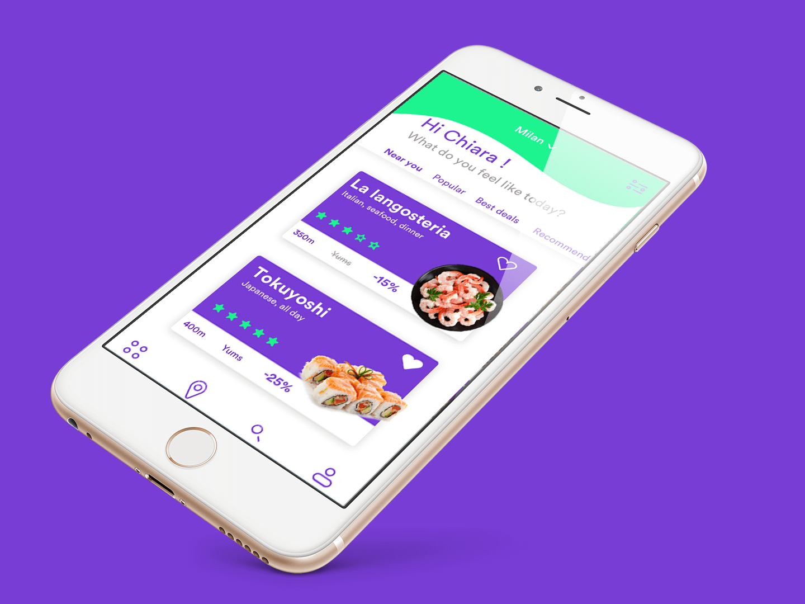
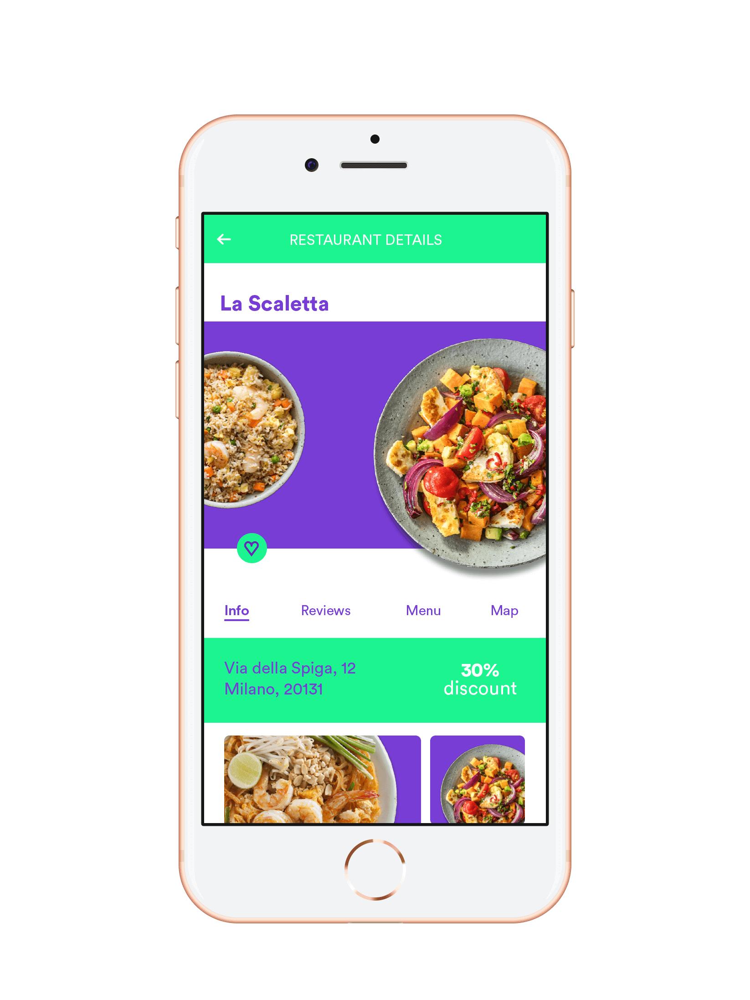
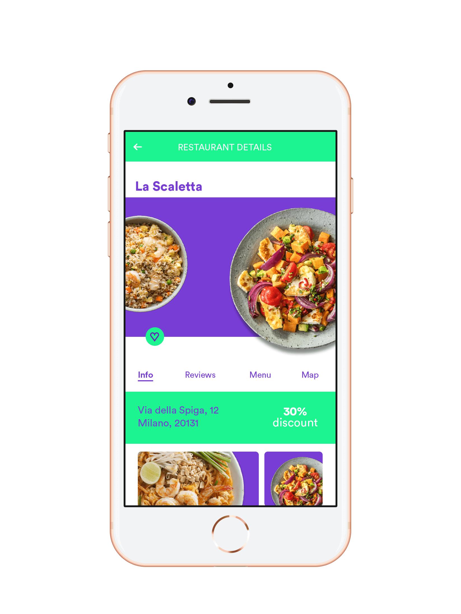
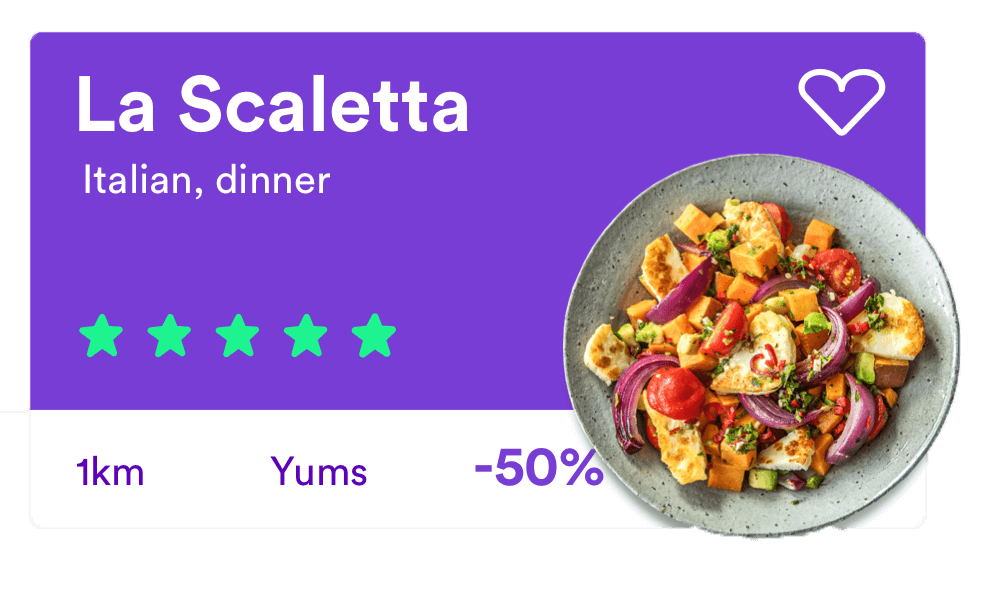
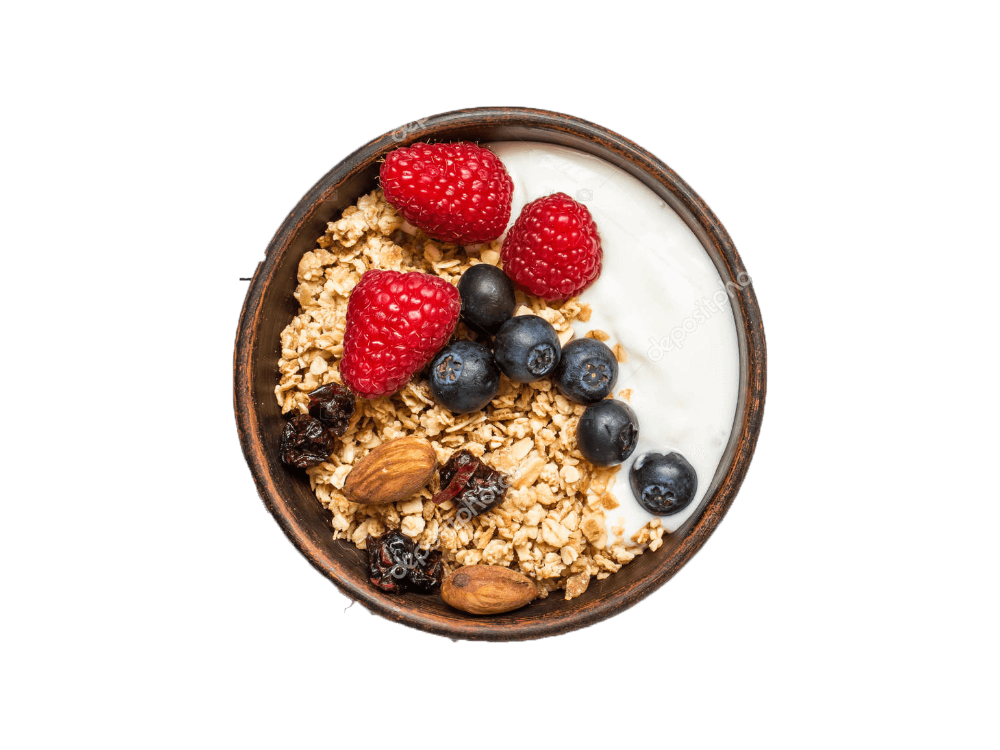

About the project
Length
One semester
Role
Group project
UX designer - UI designer
Made on
Photoshop, Indesign, Sketch, Invision
 



More about the project
Primary typeface
circular STD
Colors
#1cf490
#773dd4